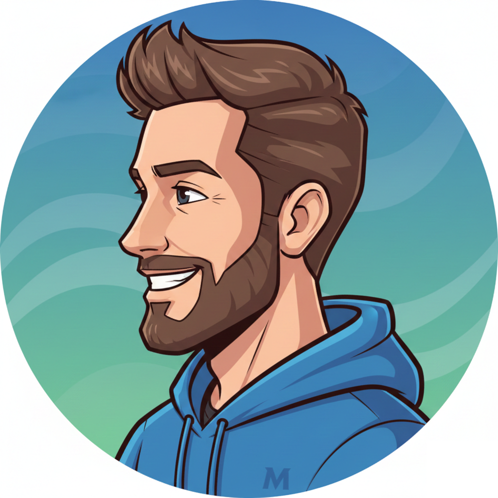
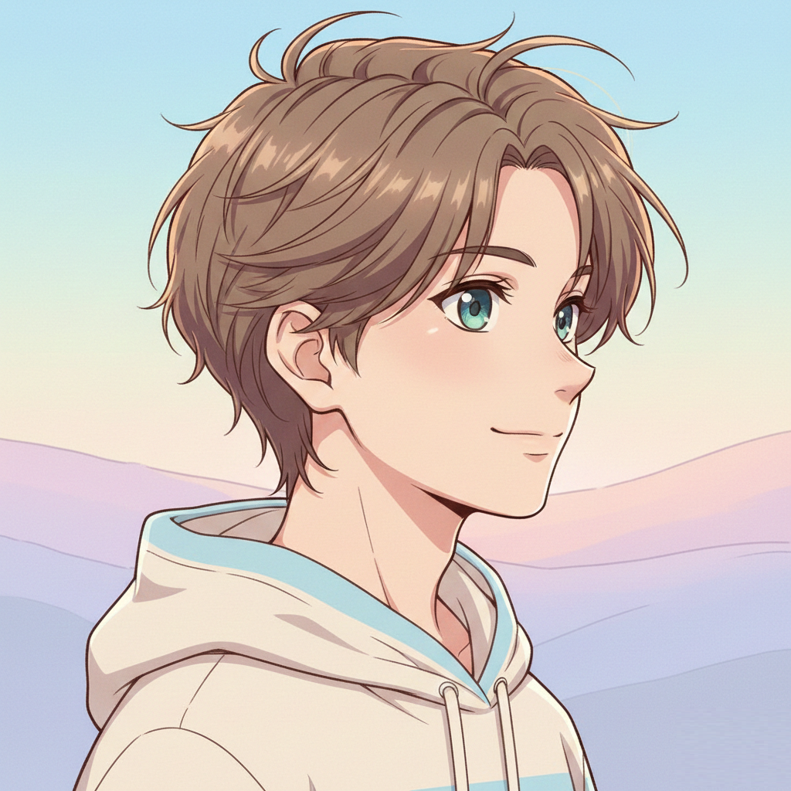

AI Profile Picture Prompts
Convert your photos into professional, creative, and social-ready profile pictures. These AI profile picture prompts work perfectly for Instagram DP, WhatsApp DP, LinkedIn profile photos, and avatars.
🎨 Mastering AI Profile Picture Generation
Creating effective AI-generated profile pictures requires understanding how different AI platforms interpret prompts, what photography terminology guides output quality, and how to optimize prompts for specific social media platforms. This comprehensive guide teaches you the techniques, principles, and best practices for generating profile pictures that serve your professional, social, or creative goals.
Why AI Profile Pictures Are Different
Profile pictures have unique technical and social requirements that distinguish them from other AI-generated images. They must work at small sizes (often 150x150 pixels), maintain facial recognition even when heavily stylized, and convey your intended personal or professional brand within a single circular or square frame.
Technical constraints: Social media platforms display profile pictures at dramatically reduced sizes. Details that look stunning in a full 1024x1024 AI output may disappear entirely when scaled to thumbnail size. Effective AI profile picture prompts must emphasize bold compositions, high contrast, and clear facial features rather than intricate background details.
Understanding Platform-Specific Requirements
LinkedIn: Professional Authority
Context: LinkedIn profile pictures represent professional credibility and career
identity.
Optimal style: Clean studio lighting, neutral or solid backgrounds, business casual
attire, confident but approachable expression.
Prompt focus: "professional," "studio lighting," "clean background," "sharp focus,"
"confident expression."
What to avoid: Excessive artistic filters, casual settings, dramatic lighting that
obscures facial features.
Size optimization: LinkedIn displays at 400x400 pixels. Ensure strong contrast between
subject and background for clarity.
Instagram: Aesthetic Identity
Context: Instagram profile pictures communicate personal brand, aesthetic, and creative
identity.
Optimal style: Stylish color grading, creative lighting, personality-forward expressions,
artistic backgrounds acceptable.
Prompt focus: "aesthetic," "modern color grading," "stylish," "creative lighting,"
"expressive."
Creative freedom: Instagram allows more artistic experimentation—anime styles,
illustration effects, and creative filters work well.
Circular crop: Instagram uses circular profile pictures. Center your face and avoid
critical details near edges.
WhatsApp: Personal Connection
Context: WhatsApp profile pictures facilitate personal communication and social
connection.
Optimal style: Friendly, approachable, natural lighting, relaxed expressions, casual
settings.
Prompt focus: "natural light," "friendly," "warm tones," "relaxed expression,"
"approachable."
Resolution note: WhatsApp compresses images significantly. Use high contrast and avoid
fine details that will disappear in compression.
Privacy consideration: Many users prefer slightly stylized or artistic WhatsApp DPs for
privacy—AI-generated anime or cartoon styles are popular.
AI Platform Comparison for Profile Pictures
MidJourney
Strengths: Artistic interpretation, stunning aesthetic quality, excellent for creative
and stylized profile pictures.
Weaknesses: Less precise control over facial features, can drift from photorealism
unexpectedly.
Best for: Instagram DPs, artistic profiles, anime/cartoon avatars.
Prompt tip: Use photography terminology (e.g., "85mm portrait lens") for photorealistic
results.
DALL-E 3 (ChatGPT)
Strengths: Instruction-following precision, consistent results, good facial feature
preservation.
Weaknesses: Sometimes over-smooths skin, less artistic flair than MidJourney.
Best for: Professional headshots, LinkedIn profiles, business photos.
Prompt tip: Be extremely specific about what you want—DALL-E 3 follows instructions
literally.
Stable Diffusion
Strengths: Maximum control through detailed prompting, model variety for different
styles.
Weaknesses: Steeper learning curve, requires more prompt engineering expertise.
Best for: Users who want fine-grained control, custom styles, experimental
aesthetics.
Prompt tip: Use negative prompts to avoid unwanted elements (e.g., "ugly, deformed,
blurry").
Lighting Terminology That Guides AI Output
Photography lighting terms significantly influence AI output quality. Understanding these terms allows you to precisely control mood, professionalism, and visual impact:
- "Studio lighting": Even, professional illumination from multiple sources. Eliminates harsh shadows. Best for professional headshots.
- "Natural light": Soft, window-like illumination. Creates warm, approachable feel. Ideal for casual profiles.
- "Soft lighting": Diffused, gentle illumination that minimizes texture and wrinkles. Flattering for most faces.
- "Dramatic lighting": High contrast with pronounced shadows. Creates artistic, moody aesthetic. Use for creative profiles only.
- "Golden hour lighting": Warm, sunset-like glow. Creates romantic, lifestyle aesthetic. Popular for Instagram.
Background Choices and Their Impact
Background selection dramatically affects profile picture effectiveness. Here's how different background types influence perception:
Solid Color / Clean
Maximum attention on face, professional appearance, excellent for small sizes. Best for LinkedIn, professional contexts.
Blurred / Bokeh
Suggests depth, photographic quality, maintains focus on subject. Works universally across platforms.
Environmental / Contextual
Shows personality, interests, lifestyle. Adds narrative. Best for Instagram, personal social media.
Artistic / Abstract
Creative expression, unique visual identity. Appropriate for artists, designers, creative professionals.
Common AI Profile Picture Mistakes
❌ Overcomplicating Prompts: More words ≠ better results. AI profile pictures need simple, focused prompts. "Professional headshot, studio lighting, clean background" often outperforms 50-word detailed descriptions.
❌ Ignoring Platform Context: Using artistic, dramatic DPs for LinkedIn or overly formal photos for Instagram creates misalignment between platform expectations and visual presentation.
❌ Neglecting Size Testing: AI outputs that look stunning at full resolution may fail at thumbnail size. Always test your AI-generated profile picture at actual display size before using.
❌ Inconsistent Style Across Platforms: Wildly different profile pictures on different platforms fragment your digital identity. Maintain some visual consistency while adapting to platform norms.
❌ Forgetting Circular Crops: Many platforms crop profile pictures to circles. Ensure important facial features are centered and avoid critical details near image edges.
Customizing Profile Picture Prompts
Template prompts are starting points requiring customization for your specific needs. Here's how to adapt profile picture prompts effectively:
- Add personal style references: "minimalist," "vibrant," "moody," "elegant"
- Specify desired mood: "confident," "friendly," "approachable," "authoritative"
- Include color preferences: "warm tones," "cool blue tones," "monochrome"
- Define quality level: "photorealistic," "illustrated," "painterly," "hyper-realistic"
- Indicate industry/field: "tech professional," "creative artist," "business executive"
Example customization: Base prompt: "Professional AI profile picture, studio lighting, clean background" → Customized: "Professional AI profile picture for tech industry, studio lighting, cool blue tones, modern minimalist background, confident expression."
Top AI Profile Picture Prompts
Professional Studio DP
LinkedIn · Clean · SharpInstagram DP
Trendy · StylishWhatsApp DP
Natural · Friendly
Cartoon Profile
Fun · Illustrated